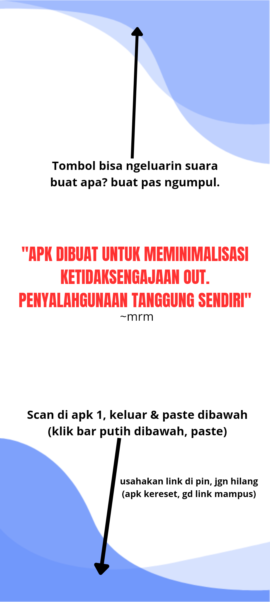

Edukasi tentang Kekerasan Terhadap Anak
Sediakan informasi yang jelas dan mudah dipahami tentang berbagai jenis kekerasan terhadap anak, efek negatifnya, serta cara mengenali dan melaporkannya.

Sediakan informasi yang jelas dan mudah dipahami tentang berbagai jenis kekerasan terhadap anak, efek negatifnya, serta cara mengenali dan melaporkannya.
Tambahkan daftar sumber daya dan layanan dukungan bagi anak-anak yang menjadi korban kekerasan, keluarga mereka, serta para pelaku yang ingin berubah perilaku.

Berikan panduan dan tips kepada orang tua dan wali tentang cara mendeteksi tanda-tanda kekerasan terhadap anak, menjaga anak-anak tetap aman, dan menyediakan dukungan emosional.
Sediakan informasi tentang proses pelaporan kekerasan terhadap anak, baik secara online maupun melalui lembaga penegak hukum, serta hak dan perlindungan hukum bagi korban.